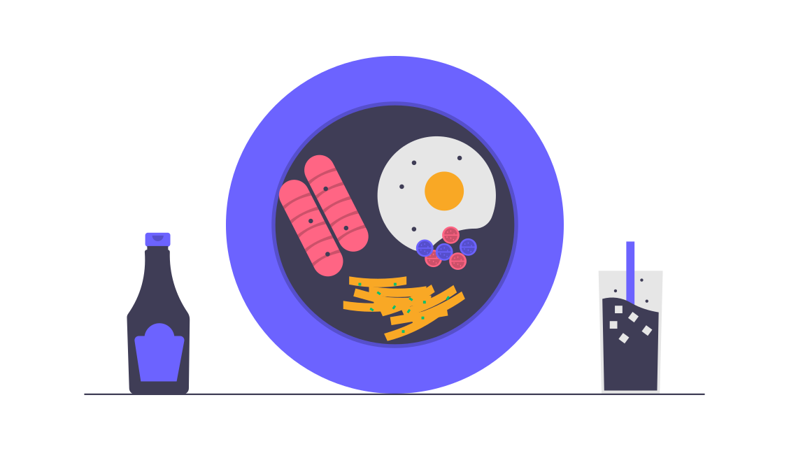
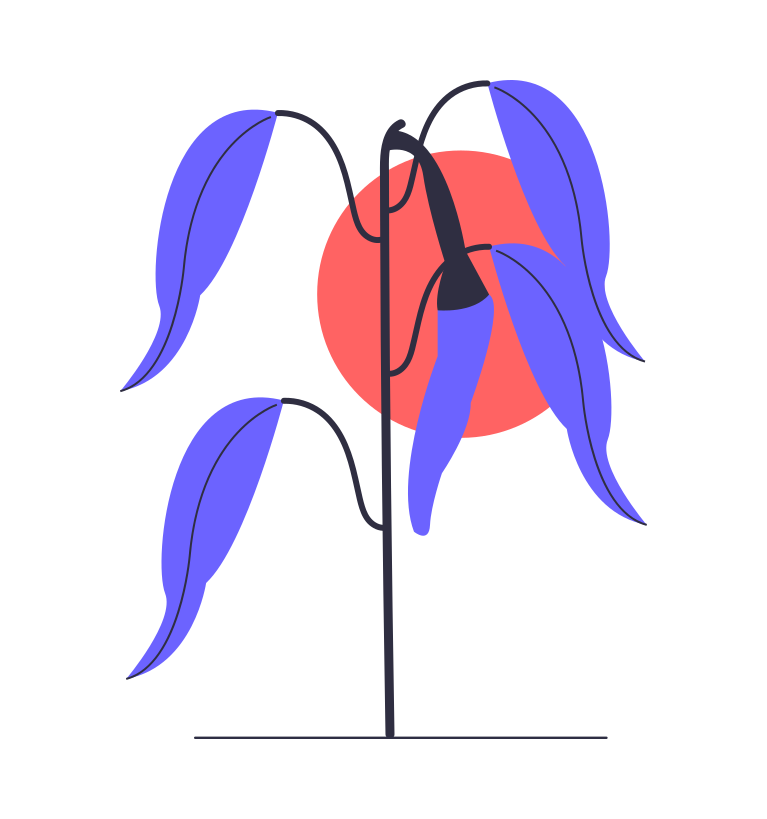

Solving world hunger one step at a time.
Ending world hunger is one of the most crucial challenges of our time. Despite advancements in agriculture and food production, millions still face hunger every day, largely due to poverty, unequal distribution of resources, and food waste. By addressing these underlying issues, we can ensure that everyone has access to nutritious food. Tackling hunger requires global cooperation, with governments, businesses, and communities working together to create sustainable solutions and empower those most affected by food insecurity.
Achieving a world free from hunger is within our reach, but it demands a commitment to long-term change. Innovative farming techniques, supporting local agriculture, reducing food waste, and promoting fair trade are steps that can help bring us closer to a hunger-free world. When we invest in food security, we invest in the well-being and potential of all people, paving the way for healthier, more resilient communities. Ending hunger is not just about providing food; it’s about building a future where everyone has the resources they need to thrive.